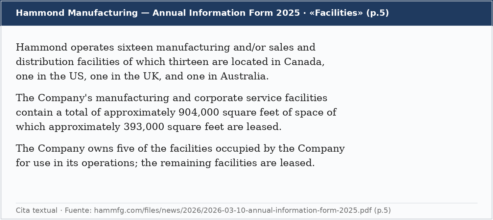
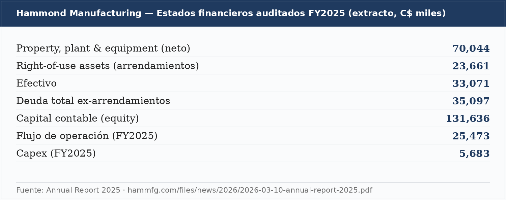

La oportunidad, en una página
Hammond cotiza a C$15.91 con un market cap de ~C$180M. Mi precio objetivo ponderado a 2027 es ~C$28 (+77%), con un rango de tesis de C$25-30 y un bull case de C$45+. Lo que te llevas por ese precio: una empresa de 110 años que fabrica los gabinetes, racks y equipo de protección eléctrica donde otros meten su equipo —el nicho exacto que está volando en sus peers grandes por el capex de data centers de IA—, comprada a ~4.3x EBITDA run-rate, prácticamente sin deuda financiera neta, y con ~511,000 sq ft de inmuebles propios que el mercado no está contando.
La empresa acaba de reportar su trimestre de ventas récord (Q1 2026: C$75.2M, +12% YoY, utilidad neta +14%), está en un ciclo de expansión de capacidad, y —el punto que quiero enfatizar— está ejecutando en silencio movimientos de un proveedor de infraestructura física de data centers, sin que el mercado le pague premium por ello.
El mercado la ve como lo que fue: una microcap industrial aburrida y opaca. Los peers, sus filings y sus propios resultados dicen otra cosa. Ese gap es la oportunidad.
Snapshot
| Métrica | Valor | Nota |
|---|---|---|
| Precio (28-jul-2026) | C$15.91 | 52 semanas: C$8.97-19.98 |
| Market cap / EV | ~C$180M / ~C$182M | 11.34M acciones (Clase A + Clase B) |
| EV / EBITDA run-rate | ~4.3x | Run-rate EBITDA ~C$42M (op. Q1 anualizada + D&A) |
| P/E TTM / run-rate | ~12.0x / ~8.5x | EPS TTM C$1.32; EPS run-rate C$1.88 (Q1×4) |
| Ventas Q1 2026 | C$75.2M (+12% YoY) | Récord; utilidad neta C$5.37M (+14% YoY) |
| Balance (31-dic-2025) | Efectivo C$33.1M; deuda neta ex-leases ~C$2M | Sin apalancamiento financiero relevante |
| FCF FY2025 | ~C$19.8M (~11% yield) | Flujo op. C$25.5M − capex C$5.7M |
| Bienes raíces | 5 inmuebles propios, ~511,000 sq ft | Valor de mercado NO divulgado; est. terceros C$90-100M |
| Control | Familia Hammond ~65% del voto; ~40% del capital | Dual-class; CEO Robert F. Hammond |
Fuentes: Q1 2026 · Annual Report 2025 · AIF 2025; precio de mercado al 28-jul-2026. EV/EBITDA run-rate y EPS run-rate son estimaciones derivadas de cifras oficiales.
1. ¿Qué hace la empresa?
Hammond Manufacturing (Guelph, Ontario; fundada en 1916) fabrica las cajas metálicas y plásticas, gabinetes, racks y equipo de protección de energía donde otras empresas meten su equipo eléctrico y electrónico: enclosures eléctricos, racks y cabinets para servidores, cases, transformadores electrónicos, regletas y supresores de pico. Vende directo a OEMs y por distribución (Arrow, Mouser, DigiKey). En 2025 vendió C$281.4M (FY2025), con un mix aproximado de 63% EE.UU., 32% Canadá y 5% resto del mundo.
La barrera es marca, escala y disponibilidad de SKU. Es un negocio físico, aburrido, con una marca de más de un siglo — la razón por la que el mercado lo ignora y por la que existe el descuento.
2. El ángulo: el capex de IA llega a los enclosures
El gasto en data centers para IA no solo infla la demanda de chips: infla toda la capa de distribución y protección eléctrica alrededor. Para separar bien la evidencia, hay dos referencias distintas:
Peer directo — nVent (NYSE: NVT): el mismo producto
El segmento Systems Protection de nVent son, literalmente, enclosures eléctricos (marca nVent HOFFMAN) — el mismo producto core que Hammond. En el Q1 2026 de nVent ese segmento creció +50% orgánico, con la vertical de infraestructura +100%+ impulsada por data centers, y la compañía subió su guía orgánica anual a 21-23%. nVent cotiza hoy a ~25x EV/EBITDA. Hammond, que hace lo mismo a menor escala, cotiza a ~4.3x.
Comparable de M&A — NSI Industries / Hubbell: producto adyacente
En junio 2026, Hubbell compró NSI Industries por US$3.0 mil millones (cierre confirmado), a un múltiplo anticipado de ~15.5x EBITDA 2026E. NSI no hace enclosures: fabrica fittings, conectores y wire management eléctricos (marcas Bridgeport, Polaris, Tork) para industria, data center y network infrastructure. Es un producto adyacente al de Hammond, y sirve como referencia de a cuánto valora el mercado privado los activos de este sector eléctrico. Hammond, otra vez, a ~4.3x.
Hammond no es un juego puro de hyperscalers como nVent; su exposición es de segunda derivada —grid/utilities por la demanda de energía de la IA, reshoring industrial, y sus racks— y por eso es más barata y más defensiva.
La ejecución (poco reconocida) hacia data centers
Además de la lectura macro, Hammond se mueve deliberadamente hacia data centers. Todo lo de abajo viene de fuentes oficiales de la empresa o de republicaciones de sus propios comunicados:
- Su propio AIF (Annual Information Form — el reporte anual regulatorio canadiense, equivalente al 10-K) dice textual: "Racks, rack cabinets, and accessories have been designed for such markets as Voice/Data, Security, Audio/Visual, Data Center and Test/Measurement."
- Regresa a la conferencia SuperComputing (SC) 2026 —el evento insignia de cómputo de alto desempeño (HPC) e IA—; su propia página lo enmarca así: "While we don't manufacture hyperscale products we do make the supporting products for facilities."
- Contrató a John Eberhart como Territory Sales Manager (nov-2024), con 20+ años en data centers y miembro del TIA Edge Datacenter Working Group —o sea, sentado en el organismo que escribe los estándares técnicos de edge data centers—, entre otras contrataciones con perfil de data center.
- Firmó una alianza con Tech-Reps (ene-2025) para representar "enclosures, racks, and accessories for telecommunications, data center, and industrial sectors."
- Publica contenido de producto enfocado a data centers en su propio sitio (ejemplo).
Caveat honesto: la empresa aún NO divulga cuánto de su revenue viene de data centers, así que hoy no se le paga premium por ese mix. Ahí está la asimetría —y también el principal riesgo de la tesis.
3. La tesis: cinco pilares
El mercado ve una microcap industrial opaca que apenas crece. Yo veo un negocio de calidad, sin deuda y generador de caja, montado sobre el mismo tailwind eléctrico que la IA acelera, con un activo inmobiliario escondido y una opción de catalizador que hoy sale gratis.
Pilar 1: la inflexión ya está en los números
El Q1 2026 hizo C$75.2M de ventas (+12% YoY), récord, con utilidad operativa de C$7.8M y utilidad neta de C$5.37M (+14% YoY), EPS C$0.47. El año fiscal 2025 cerró con EBITDA de ~C$33.3M (utilidad operativa C$22.3M + D&A C$11.0M); el run-rate del Q1 ya corre por encima, en ~C$42M anualizados. Y la empresa siguió invirtiendo en crecimiento incluso durante el golpe de aranceles: señal de confianza, no de defensa.
Pilar 2: el tailwind de infraestructura eléctrica (segunda derivada barata)
Es el ángulo central de la Sección 2: nVent prueba que el nicho de enclosures crece a doble dígito por data centers, y Hammond captura ese mismo viento vía grid/utilities, reshoring industrial y sus racks, a un múltiplo mucho menor. Sobre la demanda, la única lectura oficial es la del comunicado del Q1 2026: "Hammond Manufacturing's North American markets remained strong in the first quarter of 2026, while US tariffs negatively impacted earnings." (No hay guía numérica ni cifra de backlog en fuentes oficiales; cualquier comentario de AGM sobre backlog no está corroborado, así que no lo cito.)
Pilar 3: ciclo de expansión de capacidad
- Expansión de 85,000 sq ft (~C$18M, edificio + equipo): más capacidad de pintura y fabricación metálica; según el comunicado, entrará en operación (lista y produciendo) en el 1S 2027.
- Centro de distribución de Calgary (~55,000 sq ft, abril 2026): ataca el mercado desatendido de Canadá occidental (BC/AB/SK) y reduce lead times.
- No es un gasto aislado, es un programa de capacidad de varios años: además de esta expansión y del DC de Calgary, en el verano de 2024 la empresa compró 11.49 acres de terreno en Fergus, Ontario para crecimiento futuro (revelado en los estados financieros 2025). Que la administración apruebe capex de crecimiento año tras año dice que la demanda que ve es sostenida, no puntual.
- Retorno sobre ese capital = ROIC: con cifras oficiales de 2025 (utilidad operativa C$22.3M, ~26% de impuestos, capital invertido ~C$134M ex-arrendamientos), el ROIC de Hammond ronda 10-12% —sólido para un manufacturero— y financiado con su propio flujo de caja, no con deuda. (Cálculo propio a partir de los filings.)
Pilar 4: el activo escondido — bienes raíces
Hammond posee cinco inmuebles que suman ~511,000 sq ft (de un total de ~904,000 sq ft ocupados; el resto es rentado). Esto viene textual del AIF:

Extracto textual del Annual Information Form 2025 (p.5).
Por qué importa: en libros, todo el Property, plant & equipment neto es de solo C$70.0M (estados financieros 2025), e incluye esos 5 inmuebles a costo histórico depreciado —normalmente muy por debajo de su valor de mercado. La empresa no divulga el valor de mercado de sus inmuebles; estimaciones de terceros (corredores citados en comunidades de research) lo ubican en C$90-100M. Trato ese rango como estimación, no como dato oficial — pero incluso una fracción de él sobre un market cap de ~C$180M es material.
¿Qué es un sale-leaseback? La empresa vende sus inmuebles a un inversionista y firma un contrato para seguir operándolos como inquilino (pagando renta). Convierte ladrillos en efectivo hoy sin dejar de usar las plantas; ese efectivo puede financiar crecimiento, dividendos o recompras. Es la vía más común de "cristalizar" valor inmobiliario escondido — y por eso el tema se liga a la sucesión (Pilar 5 / Catalizadores).
Pilar 5: balance limpio, familia alineada y poder de fijación de precios
- Prácticamente sin deuda financiera neta: al cierre de 2025 el efectivo (C$33.1M) casi iguala la deuda ex-arrendamientos (C$35.1M), o sea ~C$2M de deuda neta —nada material sobre C$132M de capital (Annual Report 2025).
- Genera flujo de caja libre fuerte: en 2025 el flujo de operación fue C$25.5M y el capex de mantenimiento apenas C$5.7M → FCF ~C$19.8M, un yield de ~11% sobre el market cap. La depreciación (C$11M) supera al capex de mantenimiento, así que el FCF viene por encima de la utilidad contable. El capex grande de 2026-2027 (la expansión de C$18M) es de crecimiento, no de mantenimiento.
- Familia Hammond: controla ~65% del voto (dual-class) y ~40% del capital (AIF 2025): los aísla de la presión trimestral y respalda decisiones de largo plazo.
- Poder de fijación de precios (pricing power) demostrado en el ciclo de aranceles — ver Sección 4.

Cifras oficiales del Annual Report 2025 (C$ miles).
4. Aranceles: la tesis bajista que ya se probó
¿Qué es la "Sección 232"? Es la Sección 232 del Trade Expansion Act of 1962 de EE. UU., que faculta al presidente a poner aranceles a importaciones que "amenacen la seguridad nacional". Bajo ella, EE. UU. subió a 50% (junio 2025) el arancel al acero y aluminio y a sus "derivative products" —productos terminados que contienen acero/aluminio, como muchos gabinetes eléctricos. El contenido metálico paga el arancel 232; el resto, la tarifa normal.
En 2025 el bear case era "producto commodity con aranceles en contra". Hammond lo desactivó en la práctica:
- El margen bruto solo bajó ~3.5 pts en el año (37.1% en 2024 → 33.6% en 2025, Annual Report), pese a un arancel que en teoría pegaba mucho más — señal de pricing power, no de pérdida de clientes.
- El ajuste reciente de la Sección 232 incluyó una tasa transicional más baja (~15%) para cierto equipo industrial y eléctrico (el mayor entre 15% o la tarifa normal), vigente hasta el 1-ene-2028. Eso alivia parte del golpe para el tipo de producto de Hammond, incluidos sus racks. (Contexto legal.)
Si 2025 no mató a este negocio, es claramente más defensivo y resiliente de lo que el mercado le cobra.
5. Los números
| C$ (miles salvo EPS) | FY2024 | FY2025 | Q1 2026 | Run-rate |
|---|---|---|---|---|
| Ventas | 244,898 | 281,406 | 75,228 | ~301,000 |
| Crecimiento YoY | — | +14.9% | +12.0% | — |
| Margen bruto | 37.1% | 33.6% | n/d* | — |
| Utilidad operativa | 27,600 | 22,293 | 7,824 | ~31,300 |
| D&A | 9,818 | 11,039 | ~2,760 | ~11,000 |
| EBITDA (calc.) | 37,418 | 33,332 | ~10,584 | ~42,000 |
| Utilidad neta | 18,374 | 14,408 | 5,369 | ~21,500 |
| EPS diluido (C$) | 1.62 | 1.27 | 0.47 | 1.88 |
Fuentes: Annual Report 2025 y comunicado Q1 2026. EBITDA = utilidad operativa + D&A. *El margen bruto del Q1 2026 no se divulga en el comunicado (está en el MD&A interino de SEDAR+); no cito una cifra no oficial. Run-rate = Q1 anualizado.
6. Valuación
Valúo con EV/EBITDA —así se valúa esta industria y es el lente de los comparables (nVent ~25x; deal NSI/Hubbell ~15.5x)— y lo cruzo con P/E sobre run-rate. Siguiendo mi framework, dejo los bienes raíces y un eventual takeout FUERA del caso base y los listo como opcionalidad. Tres escenarios a 2027, ponderados por probabilidad:
| Escenario | Rev 27E | Mgn EBITDA | EBITDA | Múlt. | + Bienes raíces | Precio obj. | Prob. |
|---|---|---|---|---|---|---|---|
| Bear — aranceles/USMCA pegan, demanda US se enfría | C$290M | 10.7% | C$31M | 4.0x | — | C$11 | 20% |
| Base — ejecuta, crece 8-10%, leve re-rate | C$330M | 13.0% | C$43M | 6.5x | — | C$25 | 50% |
| Bull — doble dígito + margen 17% + re-rate + RE aflora | C$350M | 16.6% | C$58M | 8.0x | +C$60M | C$46 | 30% |
| Ponderado | ~C$28 (+77%) | 100% |
PT = (EBITDA × múltiplo − deuda neta ex-leases ~C$2M + bienes raíces) / 11.34M acciones. Bienes raíces solo en el bull, con el rango estimado por terceros (no oficial), neto de impuestos/renta.
Cross-check por P/E: el base de ~C$25 equivale a ~13x el run-rate EPS de C$1.88; a 15x sales en ~C$28, cerca del ponderado. Como referencia, su compañía hermana Hammond Power Solutions (HPS.A), que salió de HMM.A en 2001, cotiza a un múltiplo muy superior tras años de mejorar su comunicación con el mercado. El bear (~C$11) implica que el mercado nunca le paga la recuperación de margen.
Opcionalidades fuera del modelo (el kicker gratis): (1) que la empresa empiece a divulgar el mix de data center y se re-califique hacia sus peers; (2) surgimiento del valor inmobiliario vía sale-leaseback; (3) un takeout — el sector se transa a 15.5x (NSI) y ~25x (nVent); a una fracción de eso más los inmuebles, el número es muy superior al de hoy. No hacen falta supuestos heroicos.
¿Por qué existe el descuento? Sin cobertura de analistas, microcap ilíquida, comunicación con minoritarios casi nula, y un mix de data center que el mercado aún no ve. Cada factor es temporal; ninguno es estructural.
7. Checklist Micro Capo: 7.4 / 10
Clasificación: compounder de calidad + asset play — value con opcionalidad de re-rate por data center y de surgimiento de valor (RE / venta). Material de posición núcleo.
| Criterio | Score | Nota |
|---|---|---|
| Historia operativa / durabilidad | 9 | Desde 1916; marca de 110 años, misión-crítica para el cliente |
| Modelo de negocio simple | 8 | Fabrica las cajas donde va el equipo eléctrico de otros |
| Nicho / posición competitiva | 7 | Marca, escala y distribución; peer chico del mismo nicho que nVent |
| Management / track record | 7 | Opera muy bien; el pero es la opacidad con minoritarios |
| Alineación / insiders | 9 | Familia ~65% del voto, ~40% del capital; skin in the game total |
| Crecimiento de revenue | 7 | +14.9% FY25, +12% Q1-26 con aranceles en contra |
| Rentabilidad y márgenes | 6 | EBITDA ~13% run-rate; presionado por aranceles pero recuperando |
| Balance | 8 | Deuda neta ~0 ex-leases; FCF ~C$20M + inmuebles de respaldo |
| Valuación de entrada | 9 | ~4.3x EBITDA con los inmuebles gratis |
| Liquidez / IR / visibilidad de catalizador | 4 | Microcap ilíquida, IR opaco, catalizador sin fecha |
| TOTAL | 7.4 | Negocio de calidad a precio de descuento; el freno es liquidez/IR, no el negocio |
8. Catalizadores
- Q2 2026 (~agosto). El siguiente juez: márgenes, avance de la expansión, y cualquier señal de mix/disclosure de data center.
- Disclosure de data center. El día que aparezca en presentaciones, transcripts o cobertura, el re-rate puede ser fuerte — hoy no se paga nada por ello.
- Expansión en operación (1S 2027). Los 85,000 sq ft de pintura/fabricación desahogan capacidad y habilitan más volumen.
- Surgimiento del valor inmobiliario. Un sale-leaseback o venta de activos cristalizaría inmuebles que hoy están en libros a costo histórico.
- Sucesión / venta. Robert F. Hammond (~78) controla vía dual-class; el precedente de la hermana HPS.A (re-rating tras mejorar su relación con el mercado) marca el camino. Imposible de calendarizar, pero es una opción que hoy no pagas.
9. Riesgos
- Trampa de valor / sucesión — el riesgo #1. Rob puede no cristalizar nunca el valor; los inmuebles solo "cuentan" si alguien los aflora.
- USMCA / aranceles. Un tratado roto duele; el impacto real depende de exenciones que la empresa comunica mal.
- Enfriamiento del ciclo. Si el capex eléctrico/industrial se frena, la palanca operativa juega en reversa.
- Contribución data center desconocida. Sin la tesis de data center el setup es mucho menos interesante; hoy es una hipótesis de ejecución, no un número reportado.
- Costos de ramp-up. La expansión puede comer margen en 2026-2027 antes de aportar.
- Iliquidez / gobierno. Microcap opaca; entrar es fácil, salir con tamaño no. Se dimensiona sabiéndolo.
10. Por qué la tengo
La tengo porque es de los setups más escondidos que he visto: una empresa de 110 años haciendo movimientos de un proveedor de infraestructura física de data centers —el AIF que lista "Data Center" como mercado de sus racks, el regreso a la conferencia SuperComputing (SC, el evento insignia de cómputo de alto desempeño e IA), la contratación con una silla en el working group de estándares de edge, la alianza de reps que menciona explícitamente "data center"— sin que el mercado le pague ni un centavo por esa exposición. A eso le sumas ~4.3x EBITDA, deuda neta ~0 y ~511,000 sq ft de inmuebles propios que nadie está contando.
Me quedo porque la asimetría es de las mejores que sigo: el bear (~C$11, −30%) está protegido por caja y ladrillos, el base (~C$25, +56%) solo requiere que ejecute lo que ya está ejecutando, y la cola (bull C$45+) llega si el mundo se entera del ángulo data center o si la familia decide cristalizar valor. El árbitro es el margen y cualquier disclosure de mix; lo reviso trimestre a trimestre. El único costo real es la paciencia.
Bottom line
El mercado valúa a Hammond como una microcap industrial aburrida y opaca, cuando por dentro es un negocio de calidad, sin deuda, montado sobre el mismo tailwind eléctrico que la IA acelera — comprado a ~4.3x EBITDA con los inmuebles gratis. El downside está acotado por caja y ladrillos; el upside no depende de estirar múltiplos, sino de que el mercado descubra lo que la empresa ya está construyendo.
Fuentes
- Hammond — resultados Q1 2026 (28-abr-2026) · Q4/FY2025 (10-mar-2026) · Annual Report 2025 · Annual Information Form 2025
- Hammond — expansión 85,000 sq ft / C$18M · DC de Calgary · alianza Tech-Reps · contratación John Eberhart / TIA Edge DC · SuperComputing 2026
- nVent — Q1 2026 (Systems Protection) · EV/EBITDA · 10-K
- Hubbell–NSI Industries — anuncio (US$3.0B, ~15.5x) · cierre
- Sección 232 — White & Case · Congressional Research Service
Aviso legal. El contenido publicado por The Micro Capo y por Rodrigo Lezama en cualquier formato es únicamente mi opinión personal con fines educativos, informativos y de entretenimiento. No constituye asesoría financiera, fiscal, legal ni de inversión personalizada. No es una recomendación de compra, venta o mantenimiento de ningún valor. Las inversiones en microcaps conllevan riesgos significativos: los precios pueden subir o bajar y existe la posibilidad real de perder parte o la totalidad del capital. El autor tiene posición en HMM.A, y dicha posición puede cambiar sin previo aviso. Cada lector es el único responsable de sus decisiones. Antes de invertir, consulta con un asesor financiero certificado en tu jurisdicción.